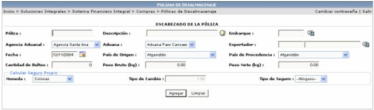
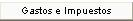
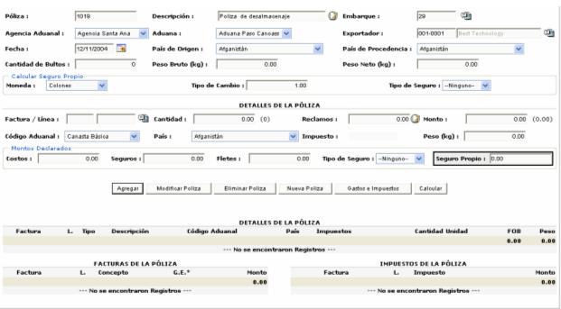
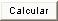
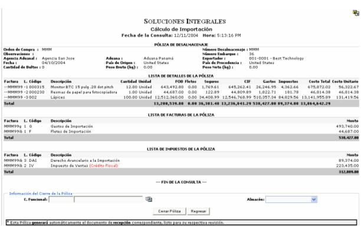

Esta opción permite registrar el documento de póliza, con el cual se retira la mercadería de aduanas.

Póliza: número que se asigna a la póliza.
Descripción:
breve explicación de la póliza. este icono permite agregar
mas detalles u observaciones de dicha póliza.
este icono permite agregar
mas detalles u observaciones de dicha póliza.
Fecha: es la fecha de creación de la póliza.
Exportador: es el socio del negocio (el proveedor)
Embarque: Al seleccionar un embarque en el encabezado de la póliza el sistema de forma automática asociará los documentos de facturas correspondientes a las órdenes de compra asociadas al Tracking seleccionado.
Agencia Aduanal: identifica el porcentaje de impuesto que paga el artículo al entrar al país destino.
País de Origen y País de Procedencia: este campo sirve para saber, si existe, entre el país de origen y el país destino algún tratado donde se especifique que el porcentaje de impuesto a pagar sea más bajo.
Cálculo de seguro propio: En esta opción se selecciona el tipo de seguro que respalda la mercadería y viene indicado en el documento de póliza que emite la aduana. Este seguro si se indica en el encabezado de la póliza se asocia de forma automática a todas las líneas de facturas asociadas a la póliza. De ser necesario y dependiendo del tipo de mercadería el seguro se puede variar por línea de detalle.
En el detalle de la póliza se va(n) a asociar la(s) línea(s) de la(s) factura(s) que se desean desalmacenar. Dichas líneas corresponden a órdenes de compra que han sido facturadas (digitadas y aplicadas) en el Registro de Transacciones.

A cada línea de la factura se le podrá asignar Gastos e Impuestos, presionando el botón

, una vez que se haya seleccionado la línea deseada. El sistema lo llevará al registro de transacciones para que modifique o le asocie nuevos gastos o impuestos:

Para realizar el cálculo de importación se debe de presionar el botón

y el sistema le desplegará un reporte con toda la información de la póliza y el cálculo de la misma.
Si la información es la correcta, se procede a cerrar la póliza, lo cual generará automáticamente el documento de recepción correspondiente.